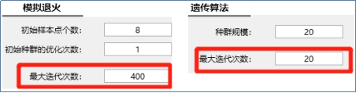
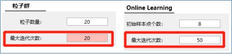

指标调整常见问题
1. 什么是算法？
首先说明，YGAMA没有有限元求解器，而是调用YJK进行有限元求解。
可以认为，算法是一种智能的自动求解“问题”的方法。
一个“问题”，一般由三部分组成：
①问题的变量，如梁柱截面尺寸，为参数；
②问题需满足的条件，如结构的大指标，为约束；
③由于在变量(梁柱截面变化)范围内，可能存在很多满足条件(结构指标)的结果，实际只需要一个最优结果，如经济性最优；这个结果为目标。
2. 算法内部如何运行？
具体来说，算法计算时首先会“随机”生成第一代模型（具有一定数量），记录此时的参数并计算，算法内部对计算结果评分，满足约束且目标越小（或更大）为较优模型；根据评分，选择更为合理的参数生成下一代模型，如此反复。不断挑选出满足约束条件下，目标更小（或更大）的模型。
关于约束和目标的区别，可以简单的这样区分：
约束为满足即可；目标为越小越好。根据这个原则设置约束和目标。
例1：大部分模型，要求指标满足束即可，因此指标为约束。
在满足约束的模型中，要找一个造价最低的，因此目标为造价。
例2：一个模型调整了很久，周期比指标总是不过，要求调过指标，这个时候也不关心经济性。
因此周期比要求越小越好，是目标；其他指标满足即可，为约束。
3. 什么时候用算法？
算法是一种智能的自动求解“问题”的方法。可以很容易的想到，还有一种求解“问题”的方法——穷举法。
当模型较小，“问题”的总计算次数为几百次时，求解问题只需要几小时。
当求解“问题”的穷举数量为几千~几百万之间时，想通过一个更快速的方法找到一个满意的结果，此时就使用算法。
4. 算法求解问题所需要的时间：
上文已经提到，YGAMA本身没有有限元求解器，而需要启动YJK完成模型计算，然后通过算法不断迭代修改模型。
根据经验，当穷举数量为几千到几百万之间时，元启发算法(退火、遗传、粒子群)约需要计算0.1%~2%乘以穷举量的模型，基本可以找到一个满意的较优模型。穷举量越大，取值越小。机器学习算法（onlinelearning）所需的计算量更少。
举例：
200w穷举，计算模型数量为：200wx0.1%=2000个模型。
2000穷举量，计算模型数量为：2000x2%=40个模型。
假设计算一个模型算需要5min，上述两种情况，分别需要2000x5=1w分钟，40x5=200分钟。
以上均为建立在合理的优化参数条件下的经验值，不排除特殊的可能性。
这种时候也可以采用onlinelearning算法以及分布式计算来降低计算时间（调用局域网内安装有GAMA的计算机一起算）。
5. 什么是最新的onlinelearning算法？
onlinelearning算法基于在线学习框架的算法，对比元启发式算法（退火、遗传、粒子群）收敛较快，可以减少大部分的计算量。该算法并不会上传用户数据。
此算法限值条件：①现阶段在目标与约束数量之和小于7个，且优化参数数量小于10个时，新算法有较好的收敛性。否则算法本身所需的计算时间（除模型计算外的计算时间）有明显的增加，后续会更新以满足更复杂的问题。②在找到最优解后，还会继续进行求解。
6. 算法选择建议及参数设置？
(1) 选择建议
建议使用onlinelearning机器学习算法，对比其他三个算法有速度优势。也可以尝试采取取其他算法。
其他算法的选择：
①退火算法：适用于简单的离散或连续问题的求解。穷举次数不超过500时，退火的效率较高，另外退火算法有较好的局部搜索能力。
②遗传算法：通用的算法。对参数、约束、目标和问题穷举次数没有明显要求。如果一个问题用其他算法找不到比较好的解但确定参数范围内一定有满足约束，结果更优的模型，那么可以用遗传算法来计算，但需要计算的数量多一些。
③粒子群算法：与遗传算法类似，如果优化问题更接近一个连续函数性能会好一些其他情况建议直接用遗传算法。
(2) 参数设置：
所有的算法，必须要设定的参数只有最大迭代次数这一个参数（下图红框位置），其他参数都可以使用默认值，这个参数决定最多计算的模型个数。


7. 启动了计算，明明在计算，但优化界面不显示计算结果
一般情况下，算法在算完一~二代模型后才会在右侧“数据展示区”显示第一个结果，一代模型数量一般为8个（模拟退火）、40个（退火及粒子群）、8个（OnlineLearning）。
8. 用算法计算了很久也没有效果？（即对算法的优化参数设置建议）
从上面我们知道了如何选择算法；接下来我们看下，如何提升算法求解问题的效率。
从“4.算法求解问题所需要的时间”可以知道，用算法求解问题主要消耗的时间为基数(穷举量)x比例(约为0.1%~2%)，除了选择合理的算法外（见第5项），最有效的是降低穷举计算量。
在使用算法的时候，需要告诉算法哪些构件需要调整，因此有不同的分组，每组有不同的候选截面。
(1) 错误举例：
① 某项目设置了9组修改截面，每组设置一个型钢库作为候选截面（共200种截面）。
错误原因：穷举数量为200^9=150亿亿个模型。即使是0.1%的计算比例，在这么多模型中找到一个较优模型，无异于大海捞针。
② 某项目主梁和次梁都放到算法优化中调整，主梁8组，每组4个截面；次梁6组，每组4个截面。穷举量：4^(8+6)=2.6亿次。
错误原因：算法优化主要针对指标优化，而次梁不抗侧力。因此次梁调整可以使用截面优化（内力反算的优化策略），经过几次迭代就可以快速找到次梁最优截面。此时的总计算量约为4^8x0.1%=75次。
(2) 正确举例：
① 某项目，位移比、周期比等指标易超限，但基本满足规范。设计师根据经验选定了8组对指标影响较大的构件，每组给了4个候选截面，根据惯性矩比从小到大排序。
由于这个优化问题属于不同构件之间相互组合，因此采用遗传算法。最终计算了130个模型，找到满意的结果，计算比例为130/4^8=0.2%。